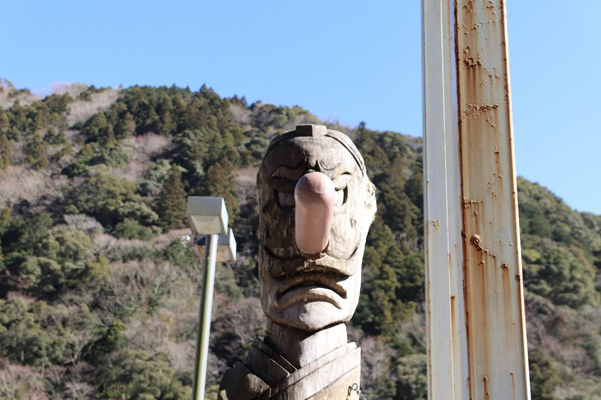
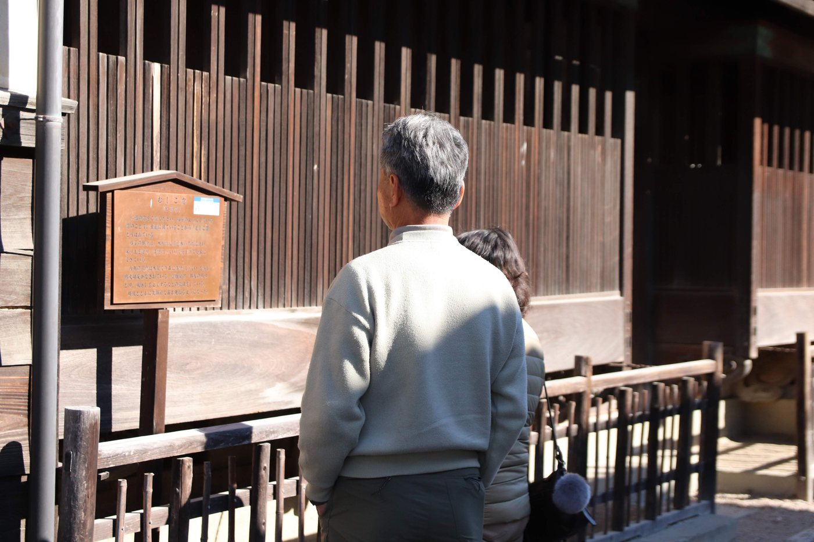

…掛けています
−
100%
＋
合わせる
写真をここに落とす
ⓘ
拭 FUKI
写真を平らな面に割り、選んだ面を消して、その絵にもう一度掛ける。
足すのではなく
捨てる場所を選ぶ
と、写真が絵の具になる。
写真


写真を開く
盤に落としてもいい。
写真は端末から出ない
（全部この画面の中で処理している）。
① 面にする
面の粗さ
500
⭐
ぼかしではない。
色の近いところを1つの面にまとめて、その中を
平らな1色
にする。上げるほど面が大きくなる。
小さい面を残さない
300
ならし
1.6
面を決める前に写真をならす。上げると細かい柄を拾わなくなる。
② 縁
縁の濃さ
55
面と面の境だけを暗くする。
0 ＝ 縁なし
。面が平らなだけだと絵にならず、ここで輪郭が立つ。
③ 消す
手＝動かす
手＝消す
⭐
「消す」にして盤の面を押すと、その面が消える
（もう一度押すと戻る）。⌘Z でも戻る。
🔴 この道具の芯はここ。
どこを捨てるかは道具でなく木下が決める
。
自動で消す
0
大きい面から順に、この割合だけ機械が消す。
既定は 0 ＝ 機械は消さない
。
種
7
面の色を暗く
1色で
手で消したのを全部戻す
④ 絵の具にする
彩度
1.20
🔴 参考（Gobled）を作品1点で測ると
彩度は落ちていない。上がっている
。ここは下げる側ではない。
ムラ（斑）
6
粒
3
⭐ 面が
完全に平ら
だと機械の絵になる。絵の具と紙の斑をここで戻す。
⑤ もう一度掛ける
1周
2周
3周
4周
⭐ 出来た絵に
もう一度①〜④を掛ける
。2〜3周で写真から離れて、どこかで見たようで見たことのない絵になる。
⚠️ 1周は「平らにしただけ」＝ここが既定。
出す
×1
×2
×3
×4
×5
消した所を抜く（道具間はこれ）
PNG